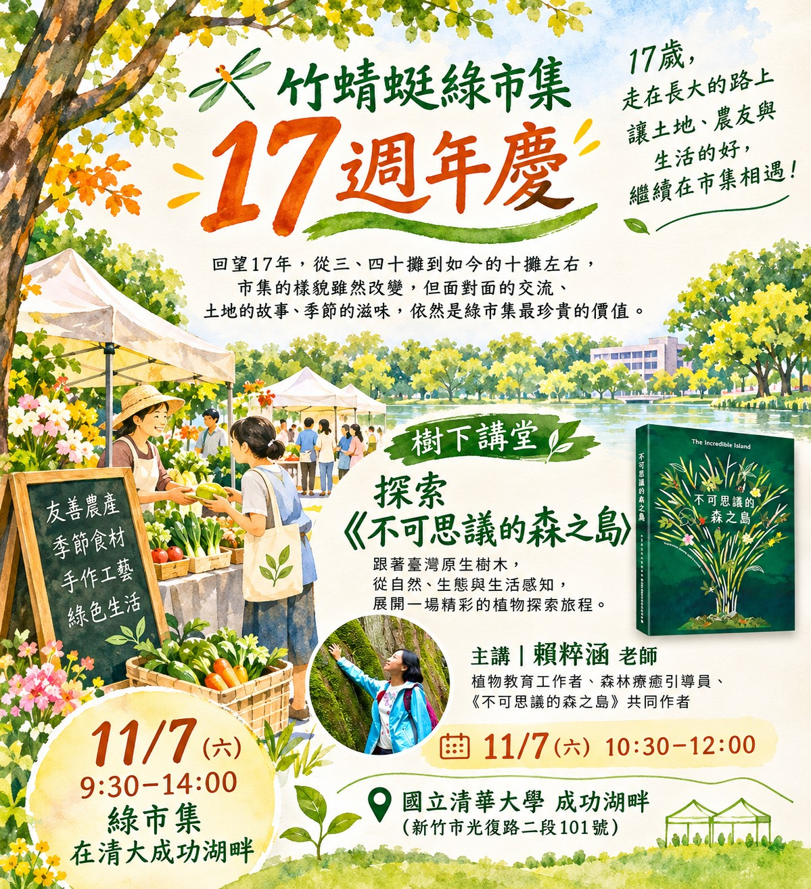

竹蜻蜓綠市集17歲了！
17歲，走在長大的路上，十一月，是竹蜻蜓綠市集17歲的生日。
17歲，已經不是孩子，卻也還在學習成為大人。
隨著年歲增長，我們漸漸覺得，綠市集彷彿也有了自己的生命。它有自己的性格、節奏，有熱鬧歡笑的時候，也有跌跌撞撞、需要重新尋找方向的時刻。
回望這17年，綠市集經歷了許多高低起伏。
曾經，市集有三、四十個攤位，熱熱鬧鬧地聚在一起。經過疫情、消費習慣改變，以及社會環境不斷變動，如今的綠市集，有時只能勉強維持十個左右的攤位。
這些改變，讓我們不斷思考：當有機友善農產品的購買管道越來越多元，小農市集在今天，還有什麼不可取代的價值？
現在，想買有機蔬菜、友善農產品，可以透過網路訂購、宅配、超市或各種通路。購買食物，確實比過去方便許多。
然而，有些東西，卻不是透過一筆交易就能得到的。
在市集裡，我們可以聽農友說說最近的天氣，知道為什麼今年的菜長得慢、果實收成不如預期；可以聊聊一道菜怎麼煮，交換各自的料理祕訣；也可以從一把青菜、一顆果實，慢慢認識土地、季節，以及農友如何面對氣候變遷與耕作環境的挑戰。
小農的生活，其實有許多精彩的故事。多聊幾句，就多認識一些。
食物不只是商品，它有來源、有季節，也有生產者的生活與心意。我們不認為每個人都必須把所有的農產品都留到市集購買。每個人都有自己的生活節奏與消費選擇。
只是希望，小農市集仍然是大家生活中的一個選項。
每個月有那麼一兩個週末，走出室內，來到湖畔樹下，看看自然風景，感受季節變化，跟熟悉或不熟悉的農友聊聊天。買一些當令蔬果，也帶回一些故事與生活靈感。
或許，這正是小農市集值得繼續存在的理由。
17歲的綠市集，還在學習長大。未來會是什麼模樣？我們也沒有標準答案。但願這個小小的市集，仍能是一處讓土地、生產者與消費者彼此相遇、相互理解的地方。